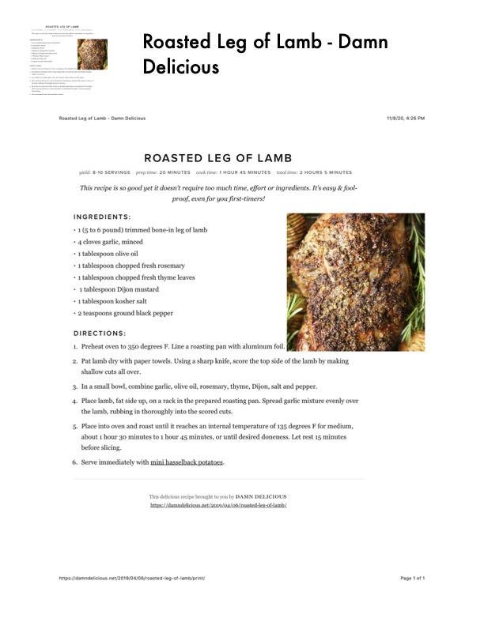

Roasted Leg of Lamb

Original cookbook page 113
This recipe is so good yet it doesn't require too much time, effort or ingredients. It's easy & fool-proof, even for you first-timers! From Damn Delicious website.
Prep: 20 minutes • Cook: 1 hour 45 minutes • Total: 2 hours 5 minutes
Ingredients
- 1 (5 to 6 pound) trimmed bone-in leg of lamb
- 4 cloves garlic, minced
- 1 tablespoon olive oil
- 1 tablespoon chopped fresh rosemary
- 1 tablespoon chopped fresh thyme leaves
- 1 tablespoon Dijon mustard
- 1 tablespoon kosher salt
- 2 teaspoons ground black pepper
Instructions
- Preheat oven to 350 degrees F. Line a roasting pan with aluminum foil
- Pat lamb dry with paper towels. Using a sharp knife, score the top side of the lamb by making shallow cuts all over
- In a small bowl, combine garlic, olive oil, rosemary, thyme, Dijon, salt and pepper
- Place lamb, fat side up, on a rack in the prepared roasting pan. Spread garlic mixture evenly over the lamb, rubbing in thoroughly into the scored cuts
- Place into oven and roast until it reaches an internal temperature of 135 degrees F for medium, about 1 hour 30 minutes to 1 hour 45 minutes, or until desired doneness. Let rest 15 minutes before slicing
- Serve immediately with mini hasselback potatoes
Recipe #113 from collection